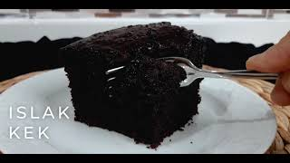

Merhaba, bugün sizlerle harika bir Islak Kek tarifi paylaşıyoruz. Tarifi deneyip yorum yapmayı unutmayın.
Malzemeler;
- 1,5 su bardağı toz şeker
- 2 su bardağı süt (oda sıcaklığında)
- Yarım su bardağı sıvı yağ
- 50 gram eritilmiş tereyağı (ılık)
- 4 yemek kaşığı kakao
- 2 yumurta (oda sıcaklığında)
- 1 vanilya
- 1 kabartma tozu
- 2 su bardağı un (200 gram)
Yapılışı;
- Toz şeker, tereyağı, sıvı yağ, süt şeker eriyinceye kadar çırpılır. Kakao eklenir, çırpılır.
- Bu sostan 1 su bardağı alınır.
- Kalan kısma 2 yumurta kırılır, çırpılır. 1 yemek kaşığı kakao, un, vanilya ve kabartma tozu eklenir. Çırpılır.
- Kalıp yağlanır. Kek harcı dökülür.
- 175 derecede 35-40 dakika pişirilir. Kürdan batırılıp kuru çıkıyorsa pişmiştir.
- Fırından çıkınca 5 dakika dinlendirilir.
- Dilimlenir. Ayırdığımız 1 su bardağı sos kekin üzerine dökülür.
Afiyet olsun.
